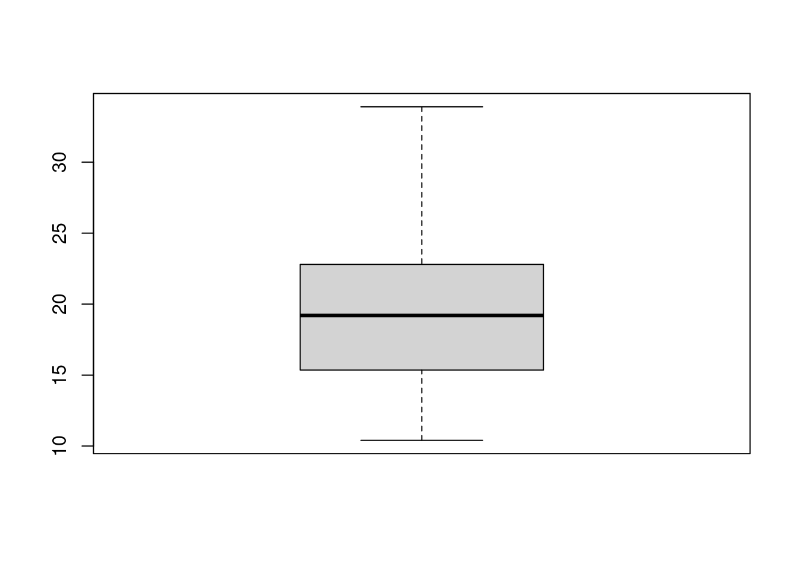

1 Getting used to R and R Studio
Don’t forget library(tidyverse) first if you need it (you probably will).
1.1 Using R Studio online
- Point your web browser at http://r.datatools.utoronto.ca. Click on the button to the left of “R Studio” (it will show blue), click the orange Log in to Start, and log in using your UTorID and password.
Solution
This is about what you should see first, before you click the orange thing:

You will see a progress bar as things start up, and then you should see something like this:
This is R Studio, ready to go.
If you are already logged in to something else on the same browser that uses your UTorID and password, you may come straight here without needing to log in again.
\(\blacksquare\)
- Take a look around, and create a new Project. Give the new project any name you like.
Solution
Select File and New Project to get this:
Click on New Directory (highlighted blue on mine). This will create a new folder to put your new project in, which is usually what you want to do. The idea is that a project is a container for a larger collection of work, such as all your assignments in this course. That brings you to this:
where you click on New Project (highlighted on mine), and:
Give your project a name, as I did. Then click Create Project. At this point, R Studio will be restarted in your new project. You can tell which project you are in by looking top right, and you’ll see the name of your project next to the R symbol:
\(\blacksquare\)
- One last piece of testing: find the Console window (which is probably on the left). Click next to the blue >, and type
library(tidyverse). Press Enter.
Solution
It may think a bit, and then you’ll see something like this:

Aside: I used to use a cloud R Studio called rstudio.cloud. If you see or hear any references to that, it means the same thing as R Studio on r.datatools or jupyter. (You can still use rstudio.cloud if you want; it used to be completely free, but now the free tier won’t last you very long; the utoronto.calink is free as long as you are at U of T.) I’m trying to get rid of references to R Studio Cloud as I see them, but I am bound to miss some, and in the lecture videos they are rather hard to find.
Now we can get down to some actual work.
\(\blacksquare\)
1.2 Using R Studio on your own computer
This is not required now, but you may wish to do this now or later so that you are not fighting for resources on the r.datatools server at busy times (eg. when an assignment is due).
Follow the instructions here to install R Studio on your computer, then start R Studio (which itself starts R).
Once you have this working, you can use it for any of the following questions, in almost exactly the same way as the online R (I will explain any differences).
1.3 Getting started
This question is to get you started using R.
- Start R Studio on
r.datatools(or on your computer), in some project. (If you started up a new project in the previous question and are still logged in, use that; if not, create a new project with File, New Project, and New Directory. Then select New Project and give it a name. Click Create Project. This will give you an empty workspace to start from.)
Solution
You ought to see something like this:
There should be one thing on the left half, and at the top right it’ll say “Environment is empty”.
Extra: if you want to tweak things, select Tools (at the top of the screen) and from it Global Options, then click Appearance. You can make the text bigger or smaller via Editor Font Size, and choose a different colour scheme by picking one of the Editor Themes (which previews on the right). My favourite is Tomorrow Night Blue. Click Apply or OK when you have found something you like. (I spend a lot of time in R Studio, and I like having a dark background to be easier on my eyes.)
\(\blacksquare\)
- We’re going to do some stuff in R here, just to get used to it. First, make a Quarto document by selecting File, New File and Quarto Document.
Solution
In the first box that pops up, you’ll be invited to give your document a title. Make something up for now.
The first time, you might be invited to “install some packages” to make the document thing work.1 Let it do that by clicking Yes. After that, you’ll have this:

A couple of technical notes:
this should be in the top left pane of your R Studio now, with the Console below it.
At the top of the file, between the two lines with three hyphens (minus signs, whatever), is some information about the document, known in the jargon as a YAML block, any of which you can change:
the title is whatever title you gave your document
the
formatis what the output is going to be (in this case, HTML like a webpage, which is mostly what we’ll be using)there is a visual editor that looks like Notion or a bit like a Google doc (the default), and also a Source editor which gives you more control, and shows that underlying the document is a thing called R Markdown (which is a code for writing documents).
My document is called “My awesome title”, but the file in which the document lives is still untitled because I haven’t saved it yet. See right at the top.
\(\blacksquare\)
- You can delete the template code below the YAML block now (that is, everything from the title “Quarto” to the end). Somewhere in the space opened up below the YAML block (it might say “Heading 2”, greyed out), type a /. This, like Notion, gives you a list of things to choose from to insert there. Pressing Enter will insert a “code chunk”, sometimes known as a “code cell”. We are going to use this in a moment.
Solution
Something like this:

The {r} at the top of the code chunk means that the code that will go in there will be R code (you can also have a Python code chunk, among others).
\(\blacksquare\)
- On the line below the
{r}, type these two lines of code into the chunk in the Quarto document:
library(tidyverse)
mtcarsSolution
What this will do: get hold of a built-in data set with information about some different models of car, and display it.

In approximately five seconds, you’ll be demonstrating that for yourself.
\(\blacksquare\)
- Run this command. To do that, look at the top right of your code chunk block (shaded in a slightly different colour). You should see a down arrow and a green “play button”. Click the play button. This will run the code, and show the output below the code chunk.
Solution
Here’s what I get (yours should be the same):

This is a rectangular array of rows and columns, with individuals (here, cars) in rows and variables in columns, known as a “dataframe”. When you display a dataframe in an Quarto document, you see 10 rows and as many columns as will fit on the screen. At the bottom, it says how many rows and columns there are altogether (here 32 rows and 11 columns), and which ones are being displayed.
You can see more rows by clicking on Next, and if there are more columns, you’ll see a little arrow next to the rightmost column (as here next to am) that you can click on to see more columns. Try it and see. Or if you want to go to a particular collection of rows, click one of the numbers between Previous and Next: 1 is rows 1–10, 2 is rows 11–20, and so on.
The column on the left without a header (containing the names of the cars) is called “row names”. These have a funny kind of status, kind of a column and kind of not a column; usually, if we need to use the names, we have to put them in a column first.
In future solutions, rather than showing you a screenshot, expect me to show you something like this:
library(tidyverse)
mtcarsThe top bit is the code, the bottom bit the output. In this kind of display, you only see the first ten rows (by default).2
If you don’t see the “play button”, make sure that what you have really is a code chunk. (I often accidentally delete one of the special characters above or below the code chunk). If you can’t figure it out, delete this code chunk and make a new one. Sometimes R Studio gets confused.
On the code chunk, the other symbols are the settings for this chunk (you have the choice to display or not display the code or the output or to not actually run the code). The second one, the down arrow, runs all the chunks prior to this one (but not this one).
Your output has its own little buttons (as seen on the screenshot). The first one pops the output out into its own window; the second one shows or hides the output, and the third one deletes the output (so that you have to run the chunk again to get it back). Experiment. You can’t do much damage here.
\(\blacksquare\)
- Something a little more interesting:
summaryobtains a summary of whatever you feed it (the five-number summary plus the mean for numerical variables). Obtain this for our data frame. To do this, create a new code chunk below the previous one, typesummary(mtcars)into the code chunk, and run it.
Solution
This is what you should see:

or the other way:
summary(mtcars) mpg cyl disp hp
Min. :10.40 Min. :4.000 Min. : 71.1 Min. : 52.0
1st Qu.:15.43 1st Qu.:4.000 1st Qu.:120.8 1st Qu.: 96.5
Median :19.20 Median :6.000 Median :196.3 Median :123.0
Mean :20.09 Mean :6.188 Mean :230.7 Mean :146.7
3rd Qu.:22.80 3rd Qu.:8.000 3rd Qu.:326.0 3rd Qu.:180.0
Max. :33.90 Max. :8.000 Max. :472.0 Max. :335.0
drat wt qsec vs
Min. :2.760 Min. :1.513 Min. :14.50 Min. :0.0000
1st Qu.:3.080 1st Qu.:2.581 1st Qu.:16.89 1st Qu.:0.0000
Median :3.695 Median :3.325 Median :17.71 Median :0.0000
Mean :3.597 Mean :3.217 Mean :17.85 Mean :0.4375
3rd Qu.:3.920 3rd Qu.:3.610 3rd Qu.:18.90 3rd Qu.:1.0000
Max. :4.930 Max. :5.424 Max. :22.90 Max. :1.0000
am gear carb
Min. :0.0000 Min. :3.000 Min. :1.000
1st Qu.:0.0000 1st Qu.:3.000 1st Qu.:2.000
Median :0.0000 Median :4.000 Median :2.000
Mean :0.4062 Mean :3.688 Mean :2.812
3rd Qu.:1.0000 3rd Qu.:4.000 3rd Qu.:4.000
Max. :1.0000 Max. :5.000 Max. :8.000 For the gas mileage column mpg, the mean is bigger than the median, and the largest value is unusually large compared with the others, suggesting a distribution that is skewed to the right.
There are 11 numeric (quantitative) variables, so we get the five-number summary plus mean for each one. Categorical variables, if we had any here, would be displayed a different way.
\(\blacksquare\)
- Let’s make a histogram of the gas mileage data. Type the code below into another new code chunk, and run it:
ggplot(mtcars, aes(x = mpg)) + geom_histogram(bins = 8)The code looks a bit wordy, but we’ll see what all those pieces do later in the course (like, maybe tomorrow).
Solution
This is what you should see:
ggplot(mtcars, aes(x = mpg)) + geom_histogram(bins = 8)
The long right tail supports our guess from before that the distribution is right-skewed.
\(\blacksquare\)
- Some aesthetics: Add some narrative text above and below your code chunks. Above the code chunk is where you say what you are going to do (and maybe why you are doing it), and below is where you say what you conclude from the output you just obtained. I find it looks better if you have a blank line above and below each code chunk.
Solution
This is what I wrote (screenshot), with none of the code run yet. My library(tidyverse) line seems to have disappeared, but yours should still be there:

\(\blacksquare\)
- Save your Quarto document (the usual way with File and Save). This saves it on the jupyter servers (and not on your computer). This means that when you come back to it later, even from another device, this document will still be available to you. (If you are running R Studio on your own computer, it is much simpler: the Quarto document is on that computer, in the folder associated with the project you created.)
Now click Render. This produces a pretty HTML version of your Quarto document. This will appear in a new tab of your web browser, which you might need to encourage to appear (if you have a pop-up blocker) by clicking a Try Again.
Solution
If there are any errors in the rendering process, these will appear in the Render tab. The error message will tell you where in your document your error was. Find it and correct it.3 Otherwise, you should see your document.
Extra 1: the rendering process as you did it doesn’t produce that nice display of a dataframe that I had in one of my screenshots. To get that, alter the YAML block to read:
format:
html:
df-print: pagedThis way, anyone reading your document can actually page through the dataframes you display in the same way that you did, to check that they contain the right things.
Extra 2: you might prefer to have a preview of your document within R Studio. To make this happen, look for the gear wheel to the right of Render. Click the arrow beside it, and in the drop-down, click on Preview in Viewer Pane. Render again, and you’ll see the rendered version of your document in a Viewer pane on the right. This puts the thing you’re writing and what it will look like side by side.
Extra 3: you might be annoyed at having to remember to save things. If you are, you can enable auto-saving. To do this, go to Tools and select Global Options. Select Code (on the left) and Saving (at the top). Click on Automatically Save when editor loses focus, to put a check mark in the box on the left of it. Change the pull-down below that to Save and Write Changes. Click OK. Now, as soon as you pause for a couple of seconds, everything unsaved will be saved.
\(\blacksquare\)
- Practice handing in your rendered Quarto document, as if it were an assignment that was worth something. (It is good to get the practice in a low-stakes situation, so that you’ll know what to do next week.)
Solution
There are two steps: download the HTML file onto your computer, and then handing it in on Quercus. To download: find the HTML file that you want to download in the Files pane on the right. You might need to click on Files at the top, especially if you had a Viewer open there before:

I called my Quarto document awesomeand the file I was working on was called awesome.qmd(which stands for “Quarto Markdown”). That’s the file I had to render to produce the output. My output file itself is called awesome.html.That’s the file I want to hand in. If you called your file something different when you saved it, that’s the thing to look for: there should be something ending in .qmd and something with the same first part ending in .html.
Click the checkbox to the left of the HTML file. Now click on More above the bottom-right pane. This pops up a menu from which you choose Export. This will pop up another window called Export Files, where you put the name that the file will have on your computer. (I usually leave the name the same.) Click Download. The file will go to your Downloads folder, or wherever things you download off the web go.
Now, to hand it in. Open up Quercus at q.utoronto.ca, log in and navigate to this course. Click Assignments. Click (the title of) Assignment 0. There is a big blue Start Assignment button top right. Click it. You’ll get a File Upload at the bottom of the screen. Click Choose File and find the HTML file that you downloaded. Click Open (or equivalent on your system). The name of the file should appear next to Choose File. Click Submit Assignment. You’ll see Submitted at the top right, and below that is a Submission Details window and the file you uploaded.

You should be in the habit of always checking what you hand in, by downloading it again and looking at it to make sure it’s what you thought you had handed in.
If you want to try this again, you can try again as many times as you like, by making a New Attempt. (For the real thing, you can use this if you realize you made a mistake in something you submitted. The graders’ instructions, for the real thing, are to grade the last file submitted, so in that case you need to make sure that the last thing submitted before the due date includes everything that you want graded. Here, though, it doesn’t matter.)
\(\blacksquare\)
- Optional extra. Something more ambitious: make a scatterplot of gas mileage
mpg, on the \(y\) axis, against horsepower,hp, on the \(x\)-axis.
Solution
That goes like this. I’ll explain the steps below.
library(tidyverse)
ggplot(mtcars, aes(x=hp, y=mpg)) + geom_point()
This shows a somewhat downward trend, which is what you’d expect, since a larger hp value means a more powerful engine, which will probably consume more gas and get fewer miles per gallon. As for the code: to make a ggplot plot, as we will shortly see in class, you first need a ggplot statement that says what to plot. The first thing in a ggplot is a data frame (mtcars here), and then the aes says that the plot will have hp on the \(x\)-axis and mpg on the \(y\)-axis, taken from the data frame that you specified. That’s all of the what-to-plot. The last thing is how to plot it; geom_point() says to plot the data values as points.
You might like to add a regression line to the plot. That is a matter of adding this to the end of the plotting command:
ggplot(mtcars, aes(x=hp, y=mpg)) + geom_point() + geom_smooth(method="lm")`geom_smooth()` using formula = 'y ~ x'
The line definitely goes downhill. Decide for yourself how well you think a line fits these data.
\(\blacksquare\)
1.4 Reading data from a file
In this question, we read a file from the web and do some descriptive statistics and a graph. This is very like what you will be doing on future assignments, so it’s good to practice it now.
Take a look at the data file at http://ritsokiguess.site/datafiles/jumping.txt. These are measurements on 30 rats that were randomly made to do different amounts of jumping by group (we’ll see the details later in the course). The control group did no jumping, and the other groups did “low jumping” and “high jumping”. The first column says which jumping group each rat was in, and the second is the rat’s bone density (the experimenters’ supposition was that more jumping should go with higher bone density).
- What are the two columns of data separated by? (The fancy word is “delimited”).
Solution
Exactly one space. This is true all the way down, as you can check.
\(\blacksquare\)
- Make a new Quarto document. Leave the YAML block, but get rid of the rest of the template document. Start with a code chunk containing
library(tidyverse). Run it.
Solution
You will get either the same message as before or nothing. (I got nothing because I had already loaded the tidyverse in this session.)
\(\blacksquare\)
- Put the URL of the data file in a variable called
my_url. Then useread_delimto read in the file. (See solutions for how.)read_delimreads data files where the data values are always separated by the same single character, here a space. Save the data frame in a variablerats.
Solution
Like this:
my_url <- "http://ritsokiguess.site/datafiles/jumping.txt"
rats <- read_delim(my_url," ")Rows: 30 Columns: 2
── Column specification ────────────────────────────────────────────────────────
Delimiter: " "
chr (1): group
dbl (1): density
ℹ Use `spec()` to retrieve the full column specification for this data.
ℹ Specify the column types or set `show_col_types = FALSE` to quiet this message.The second thing in read_delim is the thing that separates the data values. Often when you use read_delim it’ll be a space.
Hint: to get the file name into my_url, the best way is to right-click on the link, and select Copy Link Address (or equivalent in your browser). That puts in on your clipboard. Then make a code chunk and put this in it (you’ll probably only need to type one quote symbol, because R Studio will supply the other one):
my_url <- ""then put the cursor between the two quote symbols and paste. This is better than selecting the URL in my text and then copy-pasting that because odd things happen if it happens to span two lines on your screen. (URLs tend to be rather long, so this is not impossible.)
\(\blacksquare\)
- Take a look at your data frame, by making a new code chunk and putting the data frame’s name in it (as we did with
mtcars).
Solution
ratsThere are 30 rows and two columns, as there should be.
\(\blacksquare\)
- Find the mean bone density for rats that did each amount of jumping.
Solution
This is something you’ll see a lot: group_by followed by summarize. Reminder: to get that funny thing with the percent signs (called the “pipe symbol”), type control-shift-M (or equivalent on a Mac):
rats %>% group_by(group) %>%
summarize(m = mean(density))The mean bone density is clearly highest for the high jumping group, and not much different between the low-jumping and control groups.
\(\blacksquare\)
- Make a boxplot of bone density for each jumping group.
Solution
On a boxplot, the groups go across and the values go up and down, so the right syntax is this:
ggplot(rats, aes(x=group, y=density)) + geom_boxplot()
Given the amount of variability, the control and low-jump groups are very similar (with the control group having a couple of outliers), but the high-jump group seems to have a consistently higher bone density than the others.
This is more or less in line with what the experimenters were guessing, but it seems that it has to be high jumping to make a difference.
You might recognize that this is the kind of data where we would use analysis of variance, which we will do later on in the course: we are comparing several (here three) groups.
\(\blacksquare\)
1.5 Reading files different ways
This question is about different ways of reading data files. If you’re working online (using r.datatools or similar), start at the beginning. If you’re using R Studio running on your own computer, start at part (here).
- Log in to
r.datatools.utoronto.ca. Open up a project (or start a new one), and watch the spinning circles for a few minutes. When that’s done, create a new Quarto Document with File, New File, Quarto Document. Delete the “template” document, but not the top lines withtitle:andoutput:in them. Add a code chunk that containslibrary(tidyverse)and run it.
Solution
So far you (with luck) have something that looks like this:

If you have an error rather than that output, you probably need to install the tidyverse first. Make another code chunk, containing
install.packages("tidyverse")and run it. Wait for it to finish. It may take a while. If it completes successfully (you might see the word DONE at the end), delete that code chunk (you don’t need it any more) and try again with the library(tidyverse) chunk. It should run properly this time.
\(\blacksquare\)
- * The easiest kind of files to read in are ones on the Internet, with a URL address that begins with
httporhttps. I have a small file at link. Click the link to see it, and keep the tab open for the next part of this question. This is a text file with three things on each line, each separated by exactly one space. Read the data file into a data frame, and display your data frame.
Solution
Data values separated by exactly one space is the kind of thing that read_delim reads, so make another code chunk and fill it with this:
my_url <- "http://ritsokiguess.site/datafiles/testing.txt"
testing <- read_delim(my_url, " ")Rows: 6 Columns: 3
── Column specification ────────────────────────────────────────────────────────
Delimiter: " "
chr (1): g
dbl (2): x, y
ℹ Use `spec()` to retrieve the full column specification for this data.
ℹ Specify the column types or set `show_col_types = FALSE` to quiet this message.testingWhen you run that, you’ll see something like my output. The first part is read_delim telling you what it saw in the file: two columns of (whole) numbers and one column of text. The top line of the file is assumed to contain names, which are used as the names of the columns of your data frame. The bottom part of the output, obtained by putting the name of the data frame on a line by itself in your code chunk, is what the data frame actually looks like. You ought to get into the habit of eyeballing it and checking that it looks like the values in the data file.
The things on the left side of the <- symbol (that is meant to look like an arrow pointing left) are variables that you are creating in R. You get to choose the names for them. My habit is to use my_url for URLs of files that I am going to read in, and (usually) to give my data frames names that say something about what they contain, but this is your choice to make.
\(\blacksquare\)
- You might have data in a file on your own computer. To read data from such a file, you first have to upload it to
r.datatools, and then read it from there. To practice this: open a text editor (like Notepad or TextEdit). Go back to the web browser tab containing the data you used in the previous part. Copy the data from there and paste it into the text editor. Save it somewhere on your computer (like the Desktop). Upload that file, read in the data and verify that you get the right thing. (For this last part, see the Solution.)
Solution
I copied and pasted the data, and saved it in a file called testing.txt on my computer. I’m assuming that you’ve given it a similar name. Then go back to r.datatools. You should have a Files pane bottom right. If you don’t see a pane bottom right at all, press Control-Shift-0 to show all the panes. If you see something bottom right but it’s not Files (for example a plot), click the Files tab, and you should see a list of things that look like files, like this:
Click the Upload button (next to New Folder), click Choose File. Use the file finder to track down the file you saved on your computer, then click OK. The file should be uploaded to the same folder on r.datatools that your project is, and appear in the Files pane bottom right. To read it in, you supply the file name to read_delim thus: ::: {.cell}
testing2 <- read_delim("testing.txt", " ")Rows: 6 Columns: 3
── Column specification ────────────────────────────────────────────────────────
Delimiter: " "
chr (1): g
dbl (2): x, y
ℹ Use `spec()` to retrieve the full column specification for this data.
ℹ Specify the column types or set `show_col_types = FALSE` to quiet this message.:::
and then you look at it in the same way as before:
testing2Check.
\(\blacksquare\)
- You might have a spreadsheet on your computer. Create a
.csvfile from it, and use the ideas of the last part to read it into R Studio.
Solution
Open the spreadsheet containing the data you want to read into R. If there are several sheets in the workbook, make sure you’re looking at the right one. Select File, Save As, select “CSV” or “comma-separated values” and give it a name. Save the resulting file somewhere.
Then follow the same steps as the previous part to upload it to your project on R Studio Cloud. (If you look at the actual file, it will be plain text with the data values having commas between them, as the name suggests. You can open the file in R Studio by clicking on it in the Files pane; it should open top left.)
The final step is to read it into an R data frame. This uses read_csv; there are several read_ functions that read in different types of file, and you need to use an appropriate one.
My spreadsheet got saved as cars.csv, so:
cars <- read_csv("cars.csv")Rows: 38 Columns: 6
── Column specification ────────────────────────────────────────────────────────
Delimiter: ","
chr (2): Car, Country
dbl (4): MPG, Weight, Cylinders, Horsepower
ℹ Use `spec()` to retrieve the full column specification for this data.
ℹ Specify the column types or set `show_col_types = FALSE` to quiet this message.carsSome information about different types of cars.
You are now done with this question.
\(\blacksquare\)
- * Start here if you downloaded R and R Studio and they are running on your own computer. Open a web browser and point it at link. Click the link to see it, and keep the tab open for the next part of this question. This is a text file with three things on each line, each separated by exactly one space. Read the data file into a data frame, and display your data frame.
Solution
Data values separated by exactly one space is the kind of thing that read_delim reads, so make another code chunk and fill it with this: ::: {.cell}
my_url <- "http://ritsokiguess.site/datafiles/testing.txt"
testing <- read_delim(my_url, " ")Rows: 6 Columns: 3
── Column specification ────────────────────────────────────────────────────────
Delimiter: " "
chr (1): g
dbl (2): x, y
ℹ Use `spec()` to retrieve the full column specification for this data.
ℹ Specify the column types or set `show_col_types = FALSE` to quiet this message.testing:::
When you run that, you’ll see something like my output. The first part is read_delim telling you what it saw in the file: two columns of (whole) numbers and one column of text. The top line of the file is assumed to contain names, which are used as the names of the columns of your data frame. The bottom part of the output, obtained by putting the name of the data frame on a line by itself in your code chunk, is what the data frame actually looks like. You ought to get into the habit of eyeballing it and checking that it looks like the values in the data file.
The things on the left side of the <- symbol (that is meant to look like an arrow pointing left) are variables that you are creating in R. You get to choose the names for them. My habit is to use my_url for URLs of files that I am going to read in, and (usually) to give my data frames names that say something about what they contain, but this is your choice to make.
(This part is exactly the same whether you are running R Studio on r.datatools or have R Studio running on your computer. A remote file is obtained in exactly the same way regardless.)
\(\blacksquare\)
- You might have data in a file on your own computer. To read data from such a file, R has to know where to find it. Each R project lives in a folder, and one way of specifying where a data file is is to give its complete path relative to the folder that R Studio is running its current project in. This is rather complicated, so we will try a simpler way. To set this up, open a text editor (like Notepad or TextEdit). Go back to the web browser tab containing the data you used in the previous part. Copy the data from there and paste it into the text editor. Save it somewhere on your computer (like the Desktop). Follow the steps in the solution below to read the data into R.
Solution
I copied and pasted the data, and saved it in a file called testing.txt on my computer. I’m assuming that you’ve given it a similar name. Go back to R Studio. Create a new code chunk containing this: ::: {.cell}
f <- file.choose():::
Run this code chunk. You’ll see a file chooser. Find the file you saved on your computer, and click Open (or OK or whatever you see). This saves what R needs to access the file in the variable f. If you want to, you can look at it:
fand you’ll see what looks like a file path in the appropriate format for your system (Windows, Mac, Linux). To read the data in, you supply the file path to read_delim thus: ::: {.cell}
testing2 <- read_delim(f, " "):::
and then you look at it in the same way as before:
testing2Check.
\(\blacksquare\)
- You might have a spreadsheet on your computer. Create a
.csvfile from it, and use the ideas of the last part to read it into R Studio.
Solution
Open the spreadsheet containing the data you want to read into R. If there are several sheets in the workbook, make sure you’re looking at the right one. Select File, Save As, select “CSV” or “comma-separated values” and give it a name. Save the resulting file somewhere.
Then read it into an R data frame. This uses read_csv; there are several read_ functions that read in different types of file, and you need to use an appropriate one. Before that, though, again run
f <- file.choose()to find the .csv file on your computer, and then
cars <- read_csv(f)to read it in. My spreadsheet was
carsSome information about different types of cars.
\(\blacksquare\)
Especially if you are on your own computer.↩︎
This document was actually produced by literally running this code, a process known as “rendering”, which we will learn about shortly.↩︎
A big part of coding is dealing with errors. You will forget things, and it is fine. In the same way that it doesn’t matter how many times you get knocked down, it’s key that you get up again each time: it doesn’t matter how many errors you made, it’s key that you fix them. If you want something to sing along with while you do this, I recommend this.↩︎